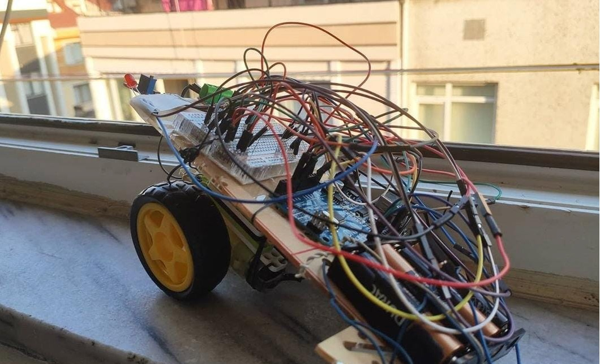
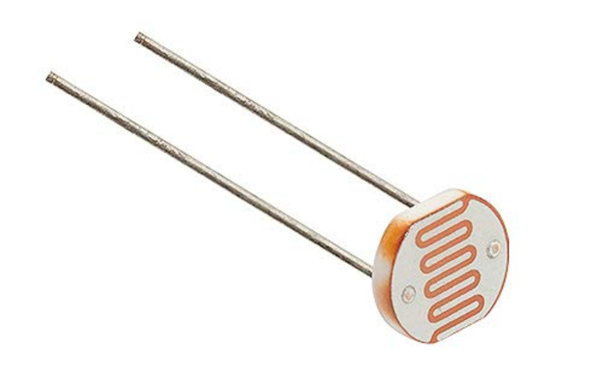
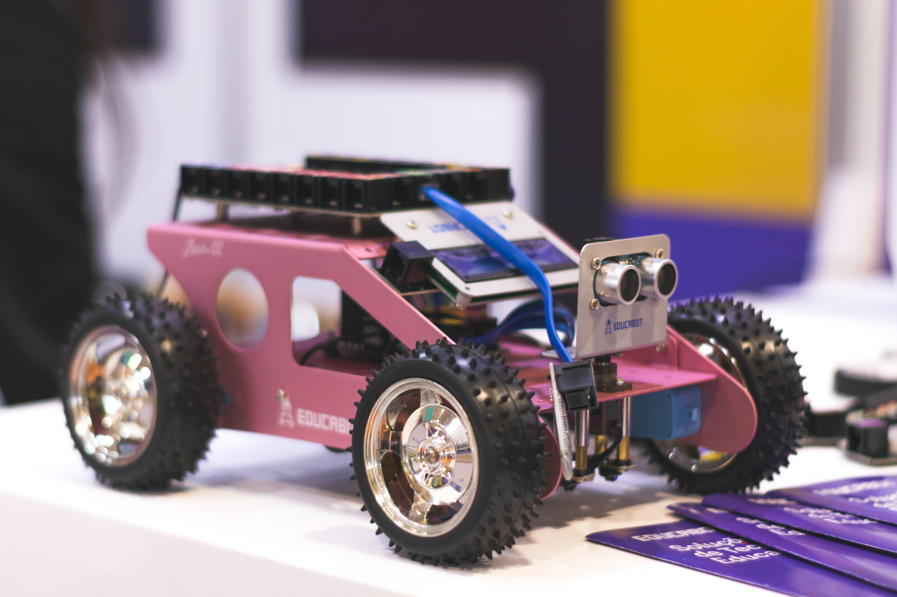
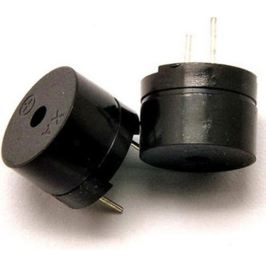

Biorobotics is a field that is very exciting in the area of integration of many fields of natural science and engineering. Biorobotics can teach us more about the limits and nature of living beings too. One of the requirements of being alive is self-growth and self-organization. It is widely researched how this concept can be implemented into human-made robots. This review paper, it is thoroughly investigated how this concept can be realized with a nanotechnology approach as well as other possibilities for realizing this goal of self-growth.

It is an Ionic application that is coded with Angular framework that allows you to discover art museums and galleries in Istanbul.
Check Out the Code

This is a grade calculation program that is coded with Ionic. It allows you to calculate your AUZEF Grade together with the letter grade. Letter grade data is prepared from the school's online resources.
PS: Open and Distance Education Faculty (AUZEF) is the faculty that carries out the activities of open education and distance education programs within the body of Istanbul University.
Check Out the Code

This course is planned for those who are interested in robotics developments. It is a narration of how to build better robots also it is the union of two different fields. In this lecture I have given information about how better materials can be used to build better robots.
This is a vegan cookbook that contains various recipes from around the world. It is coded with Java on Android Studio.

It is a project of making two sensors work at the same time on Arduino. Sensors of QRD1114 and Magnetic Hall Affect Sensor are working at the same time in robot.

This is quiz app to test your knowledge of TOEFL words.

I made a robot that senses light and reacts by moving and lighting the led. In order to inspire those who are interested in robotics, I will share the code here. I also add the detailed video about its production here.
Tools: Breadbord, Arduino UNO, Cables , DC Motor, LED, LDR

In this course I covered subjects of basics of robotics, how to make your first robot from scratch and a very basic introduction of Arduino.

This is a robot that can play Star Wars theme and lights RGB LED. It can also walk.
Tools: DC Motor, RGB Led, Arduino UNO, Jumper Kablolar, Breadbord
This is my first Java app. This app has been developed specifically to recommend you underrated films. You can also discover directors. Get direct information from IMDB. You can create you own watch lists and share them.
PS: It may not be compatible with all devices.